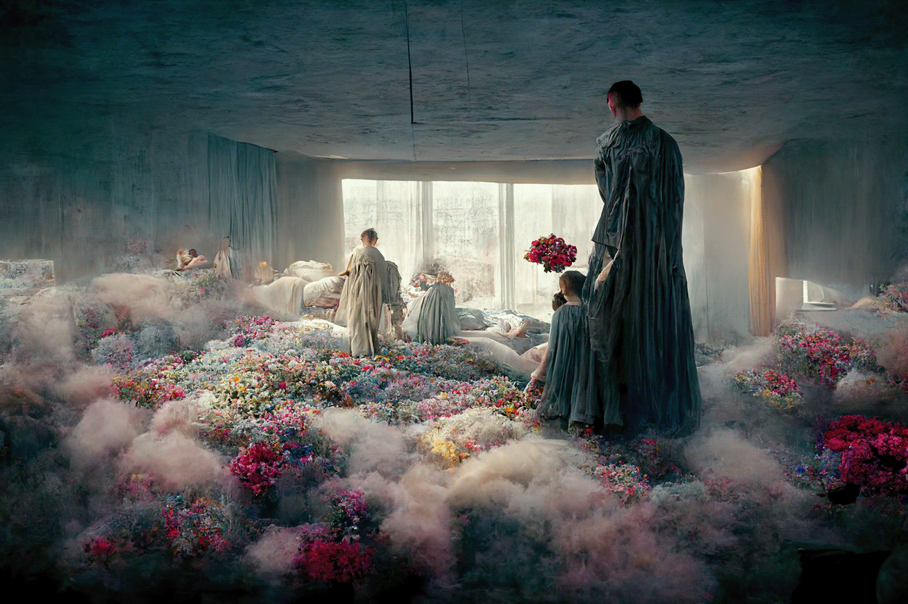
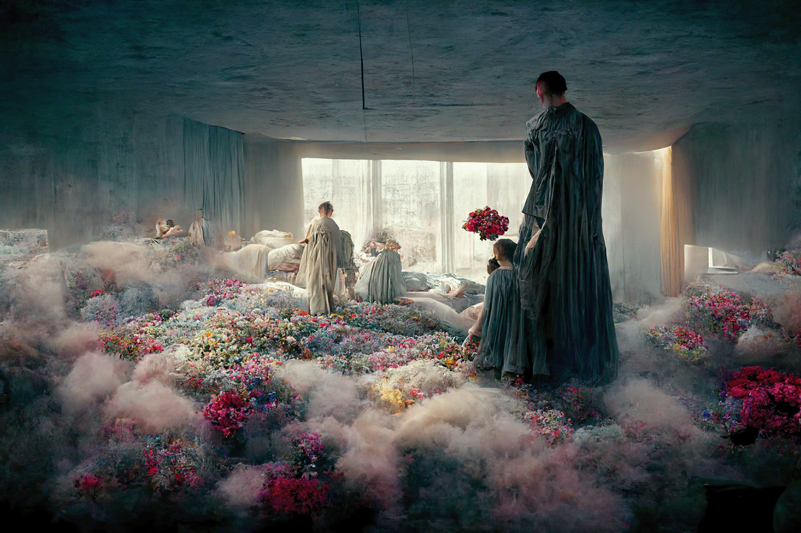
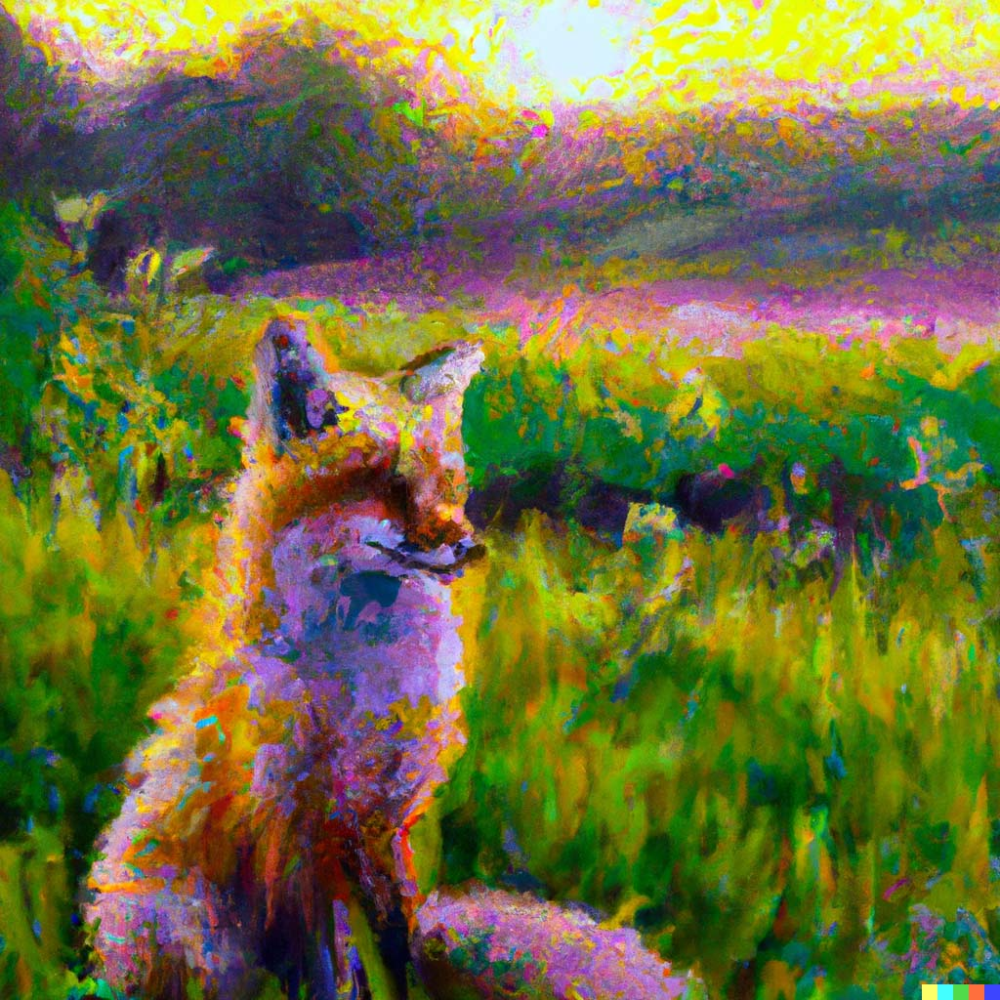
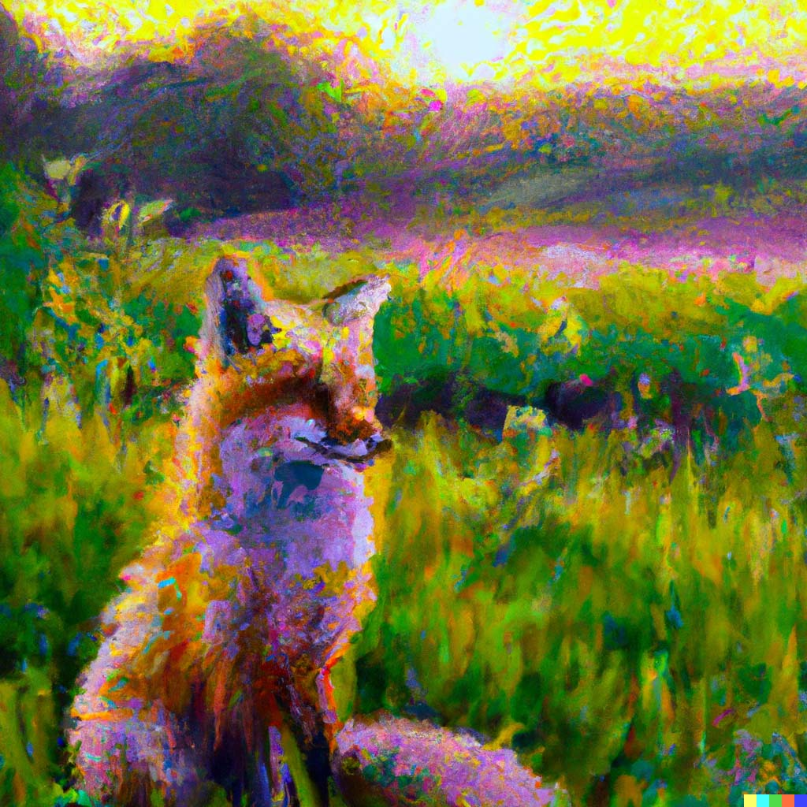

WELCOME TO THE AI UNIVERSE
What's this website? you can find different types of useful AI's that can do many different things for you. each one has it's own unique job and they will help you with different stuff. so what are you waiting for? take a look at our website and see which AI's the best for you.
ChatGPT
ChatGPT is a versatile language model that can perform a variety of tasks, including:
Answering questions: ChatGPT can provide factual information on a wide range of topics, such as science, history, sports, and more.
Providing recommendations: Based on your input, ChatGPT can offer suggestions and recommendations for various products, services, or activities.
Engaging in small talk: ChatGPT can engage in casual conversation and make small talk on various topics, such as the weather, current events, or popular culture.
Generating text: ChatGPT can generate creative writing prompts, complete sentences, or even generate stories based on a given prompt.
Translating languages: With the help of machine translation models, ChatGPT can translate text from one language to another.
Providing customer service: ChatGPT can assist with basic customer service inquiries, such as tracking orders, providing product information, or answering frequently asked questions.
Personalizing responses: ChatGPT can use contextual information to personalize its responses to you, creating a more natural and engaging conversation.
Visit ChatGPT's website!
MidJourney

Midjourney is an independent research lab that produces an artificial intelligence program under the same name that creates images from textual descriptions and Stable Diffusion.
It is speculated that the underlying technology is based on Stable Diffusion. The tool is currently in open beta, which it entered on July 12, 2022. pretty impresive if you ask me.
Users create artwork with Midjourney using Discord bot commands. This AI is amazing, its downsides are you only get a free trial (even though you can make alternative accounts) and it's only available in Discord for now.
The creators and staff of MidJourney say it will be available in a website once it's out of beta.
here's some impressive art made by MidJourney.
 



Visit MidJourney's website to join their discord server!
DALL·E

DALL-E 2 is an image generation model developed by OpenAI that can generate high-quality images from textual input.
Given a textual description as input, DALL-E 2 uses a combination of natural language processing and computer vision techniques to create a corresponding image.
The model can generate images of objects, scenes, and even abstract concepts that do not exist in the real world.
DALL-E 2 works by mapping the input text to a set of image features, which are then used to generate the corresponding image. The model uses a transformer-based architecture, similar to the ones used in large language models like MidJourney. A great free alternative for MidJourney.
 



Visit DALL·E's website!
MagicEraser
magic eraser uses AI to remove anything from an image, it can offer several benefits:
Faster and more efficient editing: with its AI-powered magic, it can quickly identify and remove unwanted elements from an image, saving you time and effort For free.
More accurate results: AI algorithms can analyze an image in great detail, allowing them to identify and remove even small or complex elements with greater accuracy at no time.
Versatility: magic erasers can remove a wide range of elements, from small blemishes to entire objects or people. This makes them a versatile tool for all kinds of image editing tasks.
Consistency: Because AI algorithms are programmed to perform a specific task in a consistent way, magic erasers uses AI to provide a more consistent results than manual editing methods, which can be affected by human error and inconsistency, plus it takes no time.
here we can see an AI generated image by DALL·E, removing the fox in less than 5 seconds.
Visit MagicEraser's website!
TinyWow
TinyWow offers a huge selection of free, easy-to-use tools for PDF files, videos, images, and more. Convert word documents to PDF files, remove the background from an image, convert videos to GIF files, make memes, sharpen images, etc.
An heaven for people that have to deal with different types of files on daily bases. The best thing about this website is that it shares its AI with its users for free which is amazing. but there's a question here. if it's a free to use website how do they make money? there's no ads or anything, do they sell data? well Their own site states "TinyWow is free. We don't have ads, we don't sell data. We currently have no plans to monetize. Why offer these tools for free? We operate two tech websites: Alphr & TechJunkie. We thought our users might find these tools helpful. For now, utilizing our existing infrastructure we are able to operate these tools at minimal additional cost. Building this and watching the growth has been fun, so we’re going to keep building free stuff.
I'll leave that up to your discretion.
Visit TinyWow's website!
CopyAI
Copy.ai is a website that provides an AI-powered writing assistant for various use cases. The website's main focus is to help people generate high-quality written content quickly and easily. Here are some of the features and offerings of Copy.ai:
Content generation: Copy.ai can generate a wide range of written content, including product descriptions, landing pages, email subject lines, social media posts, and more. Users can input a few keywords or prompts, and the AI-powered writing assistant will generate multiple options for them to choose from.
Language translation: Copy.ai can translate written content into multiple languages. This feature can help users create content for a global audience without needing to know multiple languages themselves.
Tone and style suggestions: Copy.ai can provide suggestions for the tone and style of written content based on the intended audience and purpose. This feature can help users tailor their writing to different contexts and improve engagement with readers.
Custom branding: Copy.ai allows users to create custom branding templates, including logos, slogans, and taglines, to use in their written content.
Overall, Copy.ai is a useful tool for individuals and businesses looking to generate high-quality written content quickly and easily, without the need for extensive writing skills or experience.
Visit CopyAI's website!
CONTACT
Fan? Drop a note!
Phone: +00 151515
Email: mail@mail.com